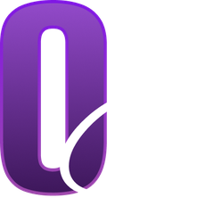

Étudiant au cégep âgé de 24 ans, je suis passionné par la création numérique et le design. Je me spécialise en design UI/UX, en modélisation 3D et en animation, avec l’envie de transformer des idées en expériences visuelles uniques. En dehors du design, mes passions pour le gym, les jeux vidéo et le cinéma nourrissent constamment ma créativité. Je suis actuellement à la recherche d’un stage en création 3D ou en design afin de mettre mes compétences en pratique, développer mon expérience et contribuer à des projets créatifs.
Persévérant
Collaboratif
Créatif
Perfectionniste